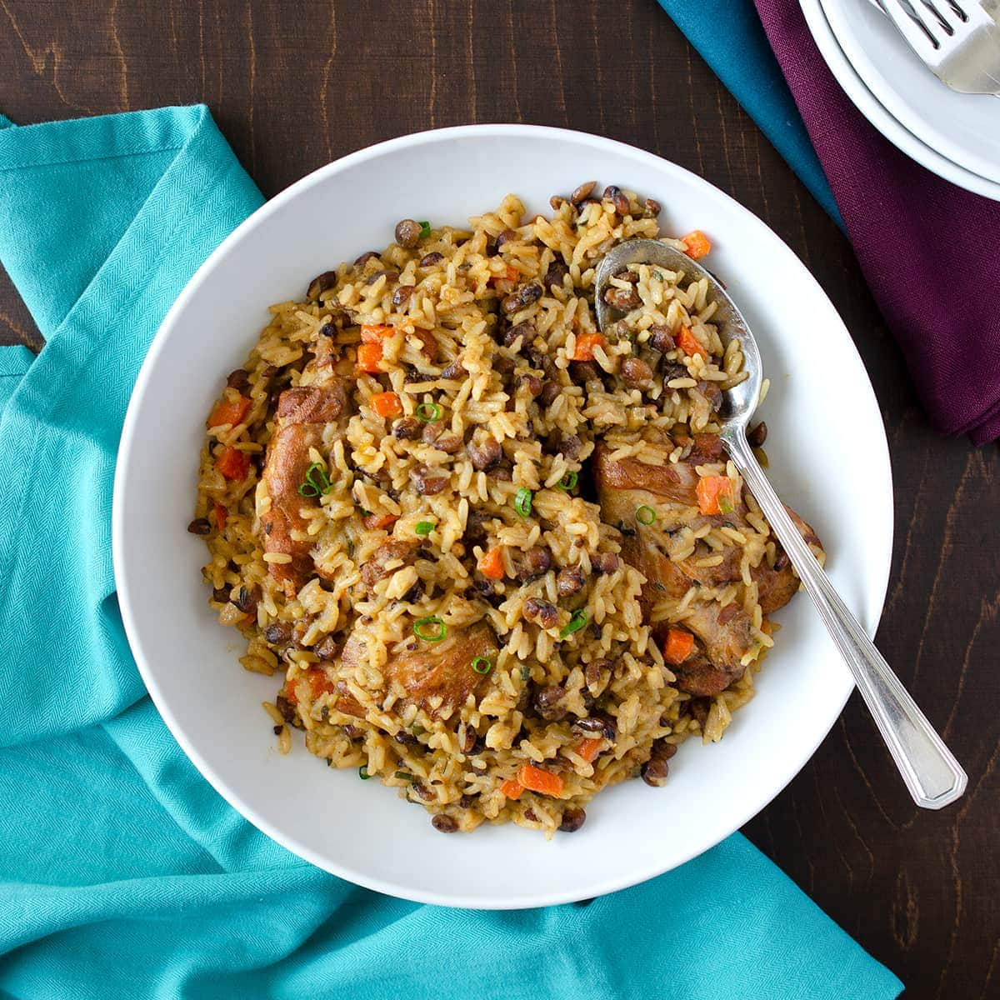

Peleau
Ingredients:

Home
- Meat: Often bone-in chicken thighs, but beef, pigtail, or vegetarian versions are also common
- Rice: Parboiled long-grain rice is typically used.
- Peas/Beans: Pigeon peas are traditional, providing a nutty flavor.
- Liquid: Coconut milk is essential for its rich flavor and creamy texture, along with water or broth.
- Seasoning: A blend of fresh herbs and spices known as "green seasoning" (including shadow benny/cilantro, thyme, garlic, and onion) is used to marinate the meat.
- Vegetables: Carrots, pumpkin, and bell peppers are often included.